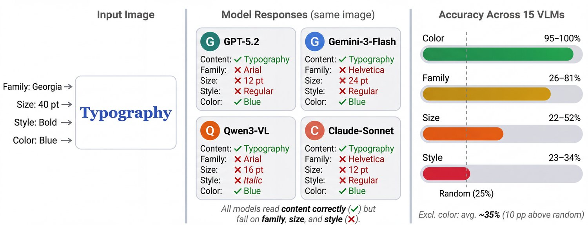
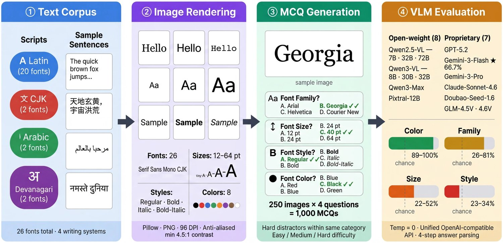
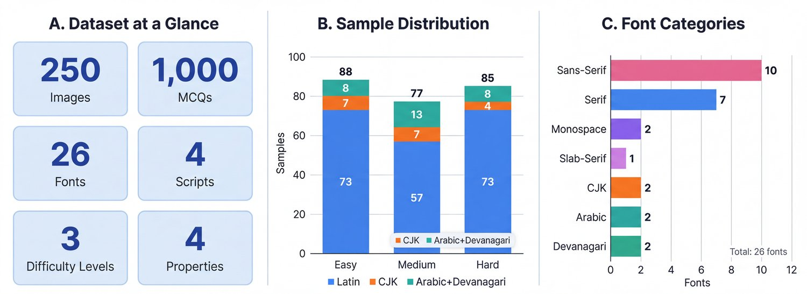
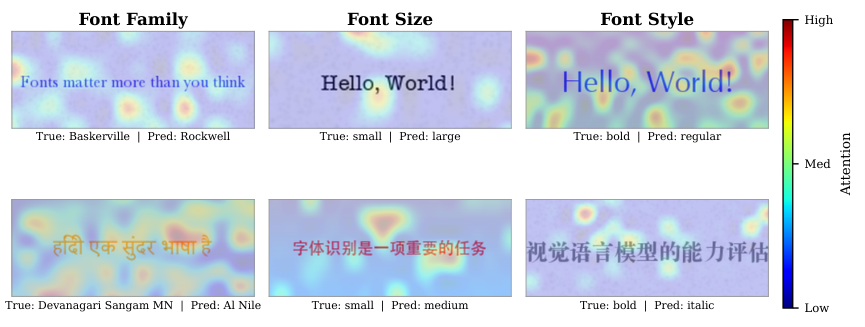
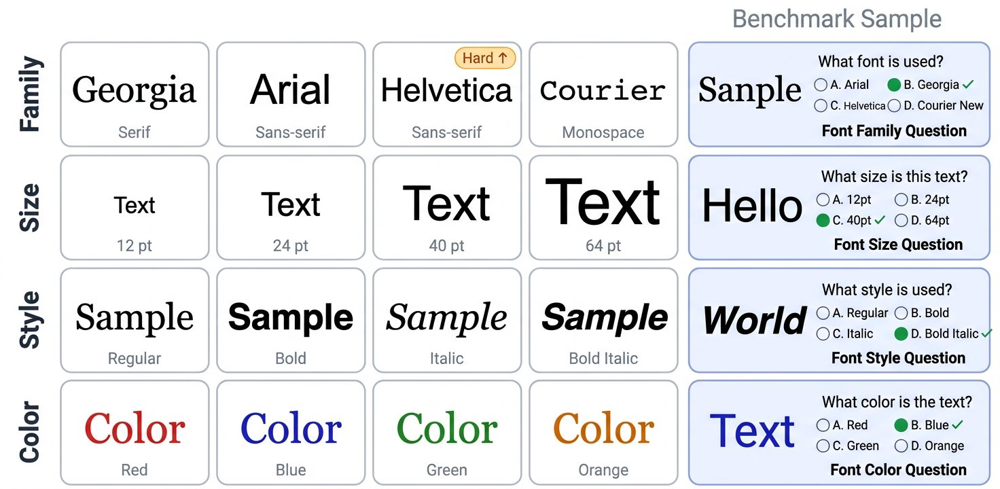
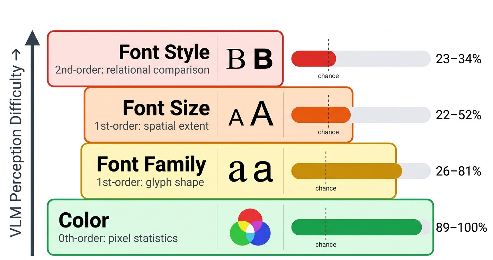
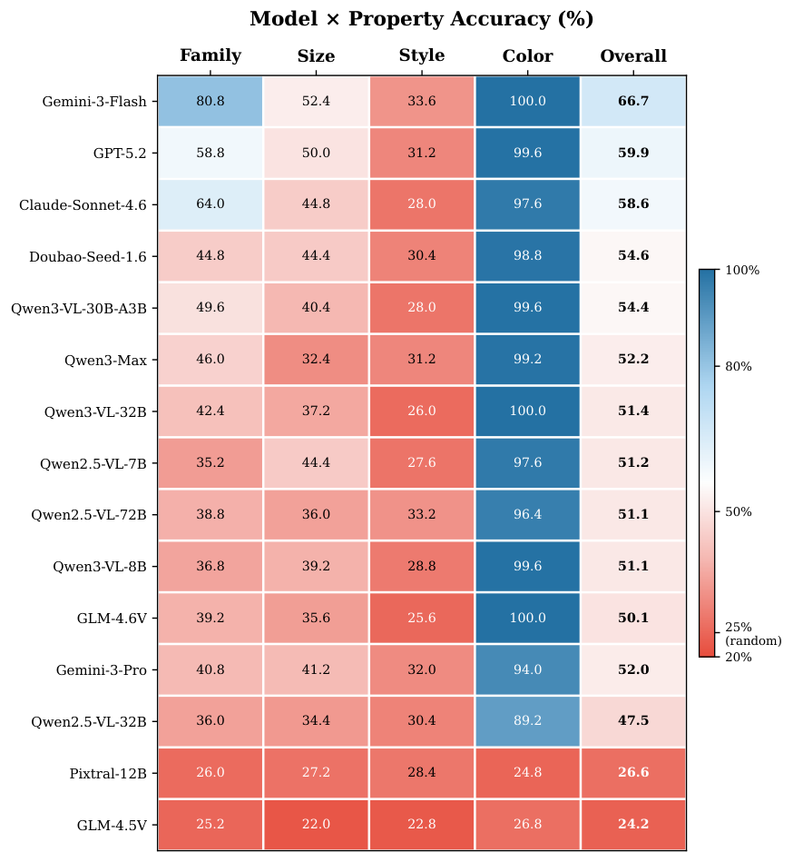

Reading $\neq$ Seeing: Diagnosing and Closing the Typography Gap in Vision-Language Models
Consider a simple experiment: show a Vision-Language Model an image of the words “Hello World” rendered in Times New Roman, 24pt, bold, red, and ask it to describe what it sees. State-of-the-art VLMs will near-perfectly transcribe the text content. But ask “what font is this?”, “is it bold?”, or “how large is the text?”, and the same models stumble dramatically. They can read the text but cannot see how it is rendered, as illustrated in Figure 1.
设想一个简单的实验：向视觉语言模型展示一张以 Times New Roman、24pt、加粗、红色渲染的“Hello World”图像，让它描述所见。最先进的 VLM 会以近乎完美的准确率转写出文字内容。但一旦问“这是什么字体？”“是加粗吗？”“文字有多大？”，同样的模型便大幅失手。它们能读出文字，却看不见文字是如何被渲染出来的，如图 1 所示。

图 1：阅读 看见。给定同一张渲染图像，四个最先进的 VLM 一致地正确读出文字内容，却系统性地错判其字体族、字号与字体样式。只有颜色这一像素级线索被所有模型正确识别。右图量化了这一差距：颜色准确率达 95–100%，而字体样式最高仅 23–34%，几乎不超过 25% 的随机基线。
This disconnect reveals a fundamental gap in current VLMs. Typography is the visual voice of written language: font choices establish hierarchies, convey tone, and encode meaning beyond the words themselves [Garfield, 2012, Lupton, 2010, Bringhurst, 2004]. Yet existing VLM benchmarks focus on what is in an image, such as objects, scenes, and text content [Liu et al., 2023, Liu et al., 2024a, Bai et al., 2023, Wang et al., 2024, Chen et al., 2024b, Liu et al., 2024c], while neglecting how things look. This limitation has concrete consequences: document analysis systems must distinguish headings from body text by font size; accessibility tools must detect emphasis for screen readers; design verification systems must confirm brand-consistent font usage. Each application depends on typographic perception that current VLMs lack.
这种脱节揭示了当前 VLM 中的一道根本性缺口。字体排印是书面语言的视觉声音：字体选择确立层级、传达语气，并在文字之外编码意义 [Garfield, 2012, Lupton, 2010, Bringhurst, 2004]。然而现有 VLM 基准只关注图像中有什么——物体、场景、文字内容 [Liu et al., 2023, Liu et al., 2024a, Bai et al., 2023, Wang et al., 2024, Chen et al., 2024b, Liu et al., 2024c]，而忽略它们长什么样。这一局限有具体的后果：文档分析系统必须依据字号区分标题与正文；无障碍工具必须为屏幕阅读器检测强调；设计校验系统必须确认字体使用符合品牌规范。这些应用都依赖当前 VLM 所不具备的字体排印感知能力。
To systematically diagnose this problem, we construct FontBench, a controlled evaluation framework that isolates typographic perception from content understanding. FontBench evaluates four fundamental typographic properties, namely font family, font size, font style, and font color, across 26 fonts, four scripts, and three difficulty levels. By using synthetically rendered images with known ground truth, FontBench eliminates confounds from image quality, layout complexity, and background clutter, isolating typographic perception as the sole variable under test.
为系统诊断这一问题，我们构建了 FontBench——一个把字体排印感知从内容理解中隔离出来的受控评测框架。FontBench 评测四项基本字体排印属性，即字体族、字号、字体样式与字体颜色，覆盖 26 种字体、四种文字系统与三个难度层级。通过使用带有已知真值的合成渲染图像，FontBench 排除了图像质量、版面复杂度与背景杂波等混淆因素，使字体排印感知成为唯一受检变量。
Our evaluation of 15 state-of-the-art VLMs spanning both open-source and closed-source models reveals that typography blindness is not a monolithic failure but follows a structured perception hierarchy: color recognition is near-perfect, font family and size occupy an intermediate zone, and font style remains universally poor, barely above the random baseline. This hierarchy maps directly to visual feature complexity: color reduces to pixel-level statistics, while style demands relational reasoning about stroke weight and slant relative to an internal norm. Excluding the trivially solved color property, average accuracy drops to 35%, exposing the true depth of the gap.
我们对 15 个最先进的 VLM（覆盖开源与闭源模型）的评测表明，字体排印盲并非一个整体性的失败，而是遵循一种结构化的感知层级：颜色识别近乎完美，字体族与字号处于中间地带，字体样式则普遍很差，仅略高于随机基线。这一层级直接对应视觉特征的计算复杂度：颜色可归约为像素级统计，而样式则要求对笔画粗细与倾斜相对于某个内部基准做关系推理。若排除已被轻易解决的颜色属性，平均准确率降至 35%，暴露出这一缺口的真实深度。
Two further observations sharpen the diagnosis. The failure is a training gap, not a capacity limitation: model scale fails to predict performance, as larger models do not consistently outperform smaller ones, and accuracy is flat across difficulty levels, exhibiting a binary “can perceive / cannot perceive” pattern consistent with typography never being annotated in pretraining data. Confirming this interpretation, LoRA fine-tuning on just 3,000 synthetic samples enables a compact open-source model to approach the best closed-source system, with font size recognition surpassing it substantially. Font style, however, remains resistant to fine-tuning, suggesting that relational visual reasoning may require architectural innovation beyond current patch-based encoders. Cross-benchmark evaluation against FRB [Li et al., 2025] corroborates these findings on an independent test bed. Our contributions are fourfold:
两项进一步的观察使诊断更为锐利。这一失败属于训练缺口，而非容量限制：模型规模无法预测表现，更大的模型并未稳定地优于更小的模型，且准确率在难度层级上保持平坦，呈现出“能感知／不能感知”的二值模式，与字体排印属性在预训练数据中从未被标注的事实相符。为印证这一解释，仅用 3,000 个合成样本做 LoRA 微调，就使一个紧凑的开源模型逼近最佳闭源系统，其字号识别更是大幅超越后者。然而字体样式对微调依然不敏感，说明关系型视觉推理可能需要超越当前基于 patch 编码器的架构创新。在 FRB [Li et al., 2025] 上的跨基准评测也在独立的测试平台上佐证了这些发现。我们的贡献有四个方面：
Problem identification. We identify and characterize typography blindness as a systematic failure mode in VLMs, where models cannot perceive how text is rendered despite near-perfect content recognition, and provide a controlled evaluation framework covering four properties across four scripts with difficulty stratification.
问题识别。我们识别并刻画了 VLM 中的字体排印盲这一系统性失效模式——模型能近乎完美地识别内容，却无法感知文字的渲染方式，并提供了一个覆盖四种文字系统、含难度分层的受控评测框架，涵盖四项属性。
Perception hierarchy. We reveal a consistent hierarchy (color family size style) that maps to visual feature complexity, alongside a scaling paradox and difficulty invariance that together identify training data composition as the primary bottleneck.
感知层级。我们揭示出一个一致的层级（颜色 字体族 字号 字体样式），它对应视觉特征的计算复杂度；同时给出规模悖论与难度不变性，二者共同指向训练数据构成是首要瓶颈。
Characterization. We conduct robustness experiments across noise, blur, compression, and rotation, revealing a capability-fragility trade-off, and validate findings on the independent FRB benchmark [Li et al., 2025].
特性刻画。我们在噪声、模糊、压缩与旋转下开展鲁棒性实验，揭示出一种能力—脆弱性权衡，并在独立的 FRB 基准 [Li et al., 2025] 上验证了上述发现。
Mitigation via fine-tuning. We demonstrate that LoRA fine-tuning on 3,000 synthetic samples enables a compact model to surpass the best closed-source model on font size and approach it overall, while revealing that font style remains resistant, pointing toward the need for architectural innovation in how encoders handle relational visual comparisons.
通过微调缓解。我们证明，用 3,000 个合成样本做 LoRA 微调可使一个紧凑模型在字号上超越最佳闭源模型、并在总体上逼近后者；同时揭示字体样式依然难以改善，指向编码器处理关系型视觉比较的方式需要架构创新。
Recent VLMs have achieved impressive performance on content-level visual tasks, including object recognition, scene understanding, and text-based question answering. Representative systems include LLaVA [Liu et al., 2023, Liu et al., 2024b], Qwen-VL [Bai et al., 2023, Bai et al., 2025b], InternVL [Chen et al., 2024b, Chen et al., 2024a], and proprietary models [OpenAI, 2023, Gemini Team, 2023], typically built on ViT-based vision encoders [Dosovitskiy et al., 2021, Radford et al., 2021]. These models are evaluated on general multimodal benchmarks [Liu et al., 2024c, Fu et al., 2023, Yu et al., 2024] and text-centric evaluations [Fan et al., 2025], yet fine-grained visual perception remains systematically understudied. Unlike object-level attributes such as shape and texture [Geirhos et al., 2019], typographic attributes are relational and rendering-specific: they describe not what content says, but how it is visually expressed. Text-centric benchmarks such as TextVQA [Singh et al., 2019], DocVQA [Mathew et al., 2021], and OCRBench [Liu et al., 2024d] evaluate whether models can read text correctly. Similarly, advances in OCR [Li et al., 2023, Bautista and Atienza, 2022] and document-focused VLMs [Ye et al., 2023, Liu et al., 2024e] further advance text understanding, but none ask whether models perceive the visual presentation of text. This oversight motivates FontBench.
近期的 VLM 在内容级视觉任务上取得了令人瞩目的表现，包括物体识别、场景理解与基于文本的问答。代表性系统有 LLaVA [Liu et al., 2023, Liu et al., 2024b]、Qwen-VL [Bai et al., 2023, Bai et al., 2025b]、InternVL [Chen et al., 2024b, Chen et al., 2024a] 以及若干闭源模型 [OpenAI, 2023, Gemini Team, 2023]，它们通常构建于基于 ViT 的视觉编码器之上 [Dosovitskiy et al., 2021, Radford et al., 2021]。这些模型在通用多模态基准 [Liu et al., 2024c, Fu et al., 2023, Yu et al., 2024] 与以文本为中心的评测 [Fan et al., 2025] 上被检验，但细粒度视觉感知仍被系统性地忽视。与形状、纹理等物体级属性 [Geirhos et al., 2019] 不同，字体排印属性是关系型的、与具体渲染相关的：它们描述的不是内容说了什么，而是内容如何被视觉呈现。TextVQA [Singh et al., 2019]、DocVQA [Mathew et al., 2021] 与 OCRBench [Liu et al., 2024d] 等以文本为中心的基准评测的是模型能否正确读出文字。类似地，OCR [Li et al., 2023, Bautista and Atienza, 2022] 与面向文档的 VLM [Ye et al., 2023, Liu et al., 2024e] 的进展也进一步推进了文本理解，但没有一项追问模型是否感知到文字的视觉呈现。这一疏漏正是 FontBench 的动因。
Font recognition has a long history in document analysis, progressing from hand-crafted feature methods [Zramdini and Ingold, 1998, Jung, 2001] to CNN-based approaches such as DeepFont [Wang et al., 2015] and transfer-learning methods [Wang et al., 2018]. More recently, FontCLIP [Tatsukawa et al., 2024] leverages CLIP embeddings for multilingual font applications, and generative approaches such as DS-Fusion [Tanveer et al., 2023] explore typography as a creative medium. However, these systems focus almost exclusively on font family identification for Latin script, treating size, style, and color as secondary concerns. Li et al. [Li et al., 2025] recently introduced FRB (Font Recognition Benchmark), which evaluates 15 common Latin fonts under a multiple-choice format and reveals a stroop effect [Stroop, 1935]: models tend to report the text content rather than the rendering font. FontBench builds on this foundation while extending it substantially: we evaluate four typographic properties rather than family alone, cover four scripts rather than only Latin, conduct robustness experiments under resolution scaling and image degradation, and investigate fine-tuning as a mitigation strategy. In § 5.3, we present a cross-benchmark evaluation on the FRB format.
字体识别在文档分析中历史悠久，从手工特征方法 [Zramdini and Ingold, 1998, Jung, 2001] 发展到 DeepFont [Wang et al., 2015] 等基于 CNN 的方法与迁移学习方法 [Wang et al., 2018]。近年来，FontCLIP [Tatsukawa et al., 2024] 利用 CLIP 嵌入支持多语言字体应用，DS-Fusion [Tanveer et al., 2023] 等生成式方法则把字体排印当作创作媒介加以探索。然而这些系统几乎只关注拉丁文字的字体族识别，把字号、样式与颜色视为次要问题。Li 等人 [Li et al., 2025] 近期提出 FRB（字体识别基准），以多项选择的形式评测 15 种常见拉丁字体，并揭示出一种 stroop 效应 [Stroop, 1935]：模型倾向于报告文字内容而非渲染所用的字体。FontBench 在这一基础上做了实质性扩展：评测四项字体排印属性而非仅有字体族，覆盖四种文字系统而非仅拉丁文，在分辨率缩放与图像退化下开展鲁棒性实验，并把微调作为一种缓解策略加以研究。在第 5.3 节中，我们给出在 FRB 格式上的跨基准评测。
Existing visual understanding benchmarks span a wide range of tasks, from general VQA [Antol et al., 2015, Goyal et al., 2017, Hudson and Manning, 2019] and multimodal reasoning [Yue et al., 2023, Lu et al., 2023, Lu et al., 2022] to fine-grained visual recognition of subtle category distinctions in species, vehicles, and products [Wah et al., 2011, Krause et al., 2013, Maji et al., 2013]. Typographic perception is itself a form of fine-grained visual recognition: distinguishing Arial from Helvetica demands the same within-category discrimination as distinguishing bird subspecies, yet the typographic dimension is entirely absent from existing VLM benchmarks. FontBench is the first benchmark to evaluate all four typographic properties across multiple scripts with a VLM-focused evaluation protocol.
现有视觉理解基准覆盖的任务范围很广，从通用 VQA [Antol et al., 2015, Goyal et al., 2017, Hudson and Manning, 2019] 与多模态推理 [Yue et al., 2023, Lu et al., 2023, Lu et al., 2022]，到对物种、车辆与商品等细粒度类别差异的视觉识别 [Wah et al., 2011, Krause et al., 2013, Maji et al., 2013]。字体排印感知本身就是一种细粒度视觉识别：区分 Arial 与 Helvetica 所需的类内判别，与区分鸟类亚种并无二致，然而字体排印这一维度在现有 VLM 基准中完全缺位。FontBench 是首个以面向 VLM 的评测协议、跨多种文字系统评测全部四项字体排印属性的基准。

图 2：评测流程。（1）文本语料：跨越拉丁文、CJK、阿拉伯文与天城文的、适配各文字系统的句子，与 26 种字体配对。（2）图像渲染：每个句子以 96 DPI 渲染并开启抗锯齿，从 26 种字体 8 种字号 4 种样式 8 种颜色中采样，背景色的选择保证 4.5:1 的对比度。（3）选择题生成：每张渲染图像生成四道多项选择题，每个属性一道，干扰项取自同类且难以分辨的取值，共产生三个难度层级上的 1,000 道问题。（4）VLM 评测：以 temperature 0 查询模型；回答通过四步级联策略解析。
Our central design objective is to isolate typographic perception from content understanding. Each image is synthetically rendered with a single, controlled set of typographic parameters and paired with four multiple-choice questions, one per property, against a 25% random baseline, as illustrated in Figure 2.
我们的核心设计目标是把字体排印感知从内容理解中隔离出来。每张图像都以单一、受控的一组字体排印参数合成渲染，并配以四道多项选择题——每个属性一道，对照 25% 的随机基线，如图 2 所示。
The font registry spans 26 fonts organized by category and script (see §A.1), covering serif, sans-serif, monospace, and display typefaces for Latin, plus dedicated fonts for Chinese, Arabic, and Devanagari. All fonts carry permissive licenses under SIL OFL, Apache, or public domain terms. The registry deliberately includes both highly distinctive typefaces and visually similar ones, so that difficulty levels reflect genuine perceptual discriminability. Representative samples across all four typographic dimensions are shown in Fig. 7.
字体登记表按类别与文字系统组织，涵盖 26 种字体（见 §A.1），包括拉丁文的衬线体、无衬线体、等宽体与装饰体，以及中文、阿拉伯文与天城文的专用字体。所有字体均采用 SIL OFL、Apache 或公有领域等宽松许可。登记表有意同时纳入辨识度极高的字体与视觉上相近的字体，使难度层级反映真实的感知可辨别性。四个字体排印维度上的代表性样本见图 7。
Each sample is produced by selecting text from a script-appropriate corpus, sampling typographic parameters according to difficulty stratification rules, and rendering the result using Pillow with anti-aliasing on a background ensuring a minimum contrast ratio of 4.5:1. Difficulty is determined per-property based on visual discriminability. For font family, easy samples pair fonts from distinct categories such as Courier New and Helvetica, while hard samples require distinguishing visually similar typefaces such as Arial and Helvetica Neue. For font size, difficulty scales with the point-size gap between distractors. Style difficulty reflects the perceptual contrast between target and distractors, and color difficulty is governed by chromatic distance. The algorithmic procedure and complete parameter tables are provided in §A.2.
每个样本的生成过程是：从适配文字系统的语料中选取文本，按难度分层规则采样字体排印参数，再用 Pillow 在开启抗锯齿的条件下把结果渲染到背景上，背景保证最低 4.5:1 的对比度。难度按属性依视觉可辨别性确定。对字体族，简单样本配对来自不同类别的字体，如 Courier New 与 Helvetica；困难样本则要求区分 Arial 与 Helvetica Neue 这类视觉相近的字体。对字号，难度随干扰项之间的磅值差距增大而降低。样式难度反映目标与干扰项之间的感知反差，颜色难度则由色度距离决定。算法流程与完整的参数表见 §A.2。
For each sample, we generate four multiple-choice questions, one per property, using varied phrasings to prevent models from exploiting surface-level patterns (see §A.4 for the full template set). Distractor options are drawn from valid values and, for harder questions, are deliberately chosen to be visually similar to the correct answer. Options are randomly ordered to prevent positional bias. All VLMs are queried at temperature 0 for deterministic responses. Answers are parsed with a cascading strategy from exact letter matching to substring search; details are provided in §B.2.
对每个样本，我们生成四道多项选择题——每个属性一道，采用多种措辞，以防模型利用表层模式（完整模板集见 §A.4）。干扰项从合法取值中抽取；对较难的问题，则刻意选择与正确答案视觉相近的选项。选项随机排序以避免位置偏差。所有 VLM 均以 temperature 0 查询以获得确定性回答。回答采用从精确字母匹配到子串搜索的级联策略解析；细节见 §B.2。
The benchmark comprises 250 samples spanning 26 fonts, 8 sizes, 4 styles, and 8 colors, yielding 1,000 multiple-choice questions total. The Latin-heavy distribution at 81.2% reflects the larger Latin font registry. The three difficulty levels are approximately balanced with Easy at 35.2%, Medium at 30.8%, and Hard at 34.0%. Figure 3 summarizes the composition.
该基准包含 250 个样本，覆盖 26 种字体、8 种字号、4 种样式与 8 种颜色，共计 1,000 道多项选择题。拉丁文占比偏高，达 81.2%，这与拉丁字体登记表规模更大有关。三个难度层级大致均衡：简单 35.2%、中等 30.8%、困难 34.0%。图 3 汇总了数据集构成。

图 3：数据集统计。（A）关键维度。（B）样本在文字系统与难度层级上的分布。（C）字体类别构成。
If VLMs can read text flawlessly, why do they fail to perceive its visual presentation? The answer depends on whether the bottleneck is what models are taught or what architectures can compute. We design our evaluation to distinguish these two hypotheses by probing performance across properties of varying visual complexity, difficulty levels that modulate perceptual challenge, and model scales that test whether capacity alone can compensate. The results point clearly to a training-data omission for most properties, with one notable exception that implicates an architectural limitation.
既然 VLM 能无误地读出文字，为何它们无法感知文字的视觉呈现？答案取决于瓶颈在于模型被教了什么，还是架构能计算什么。我们的评测设计用于区分这两种假设：在视觉复杂度各异的属性上探测表现、用难度层级调节感知挑战，并用模型规模检验单靠容量能否弥补。结果清楚地指向：多数属性的问题出自训练数据的缺失，仅有一个例外牵涉到架构层面的限制。
We evaluate ten open-source and five closed-source VLMs spanning a wide range of architectures, scales, and training paradigms (see §B.1 for the full list). Open-source models include the Qwen2.5-VL family [Bai et al., 2025b] at 7B, 32B, and 72B, Qwen3-VL [Bai et al., 2025a] at 8B, 30B-A3B (MoE), and 32B, along with Pixtral-12B [Agrawal et al., 2024], GLM-4.5V and GLM-4.6V [V Team et al., 2026]. Closed-source models comprise Qwen3-Max, GPT-5.2 [Singh et al., 2025], Gemini-3-Flash and Gemini-3-Pro [Gemini Team, 2023], Claude-Sonnet-4.6, and Doubao-Seed-1.6. All are queried at temperature 0 with PNG images at native resolution. Random baseline accuracy is 25%.
我们评测了十个开源与五个闭源 VLM，覆盖广泛的架构、规模与训练范式（完整列表见 §B.1）。开源模型包括 7B、32B、72B 的 Qwen2.5-VL 系列 [Bai et al., 2025b]，8B、30B-A3B（MoE）、32B 的 Qwen3-VL [Bai et al., 2025a]，以及 Pixtral-12B [Agrawal et al., 2024]、GLM-4.5V 与 GLM-4.6V [V Team et al., 2026]。闭源模型包括 Qwen3-Max、GPT-5.2 [Singh et al., 2025]、Gemini-3-Flash 与 Gemini-3-Pro [Gemini Team, 2023]、Claude-Sonnet-4.6 与 Doubao-Seed-1.6。所有模型均以 temperature 0、原始分辨率的 PNG 图像查询。随机基线准确率为 25%。
表 1：FontBench 上的主要结果。我们报告每个属性的准确率（%），并按总体、难度层级与书写系统分别列出。最优与次优结果已高亮。随机基线为 25%。
| Per Property | By Difficulty | By Script | |||||||||
| Model | Family | Size | Style | Color | Overall | Easy | Med | Hard | Latin | CJK | Other |
| Open-Source Models | |||||||||||
| Qwen2.5-VL-7B | 35.2 | 44.4 | 27.6 | 97.6 | 51.2 | 51.4 | 53.2 | 49.1 | 49.8 | 65.3 | 52.6 |
| Qwen2.5-VL-32B | 36.0 | 34.4 | 30.4 | 89.2 | 47.5 | 49.4 | 45.1 | 47.6 | 47.3 | 59.7 | 41.4 |
| Qwen2.5-VL-72B | 38.8 | 36.0 | 33.2 | 96.4 | 51.1 | 49.7 | 52.6 | 51.2 | 50.7 | 65.3 | 44.8 |
| Qwen3-VL-8B | 36.8 | 39.2 | 28.8 | 99.6 | 51.1 | 50.3 | 53.2 | 50.0 | 49.5 | 66.7 | 52.6 |
| Qwen3-VL-30B-A3B | 49.6 | 40.4 | 28.0 | 99.6 | 54.4 | 54.3 | 54.9 | 54.1 | 54.8 | 58.3 | 49.1 |
| Qwen3-VL-32B | 42.4 | 37.2 | 26.0 | 100.0 | 51.4 | 51.4 | 52.9 | 50.0 | 50.7 | 66.7 | 46.6 |
| Pixtral-12B | 26.0 | 27.2 | 28.4 | 24.8 | 26.6 | 25.9 | 26.6 | 27.4 | 27.1 | 26.4 | 23.3 |
| GLM-4.5V | 25.2 | 22.0 | 22.8 | 26.8 | 24.2 | 22.7 | 24.0 | 25.9 | 23.3 | 29.2 | 27.6 |
| GLM-4.6V | 39.2 | 35.6 | 25.6 | 100.0 | 50.1 | 48.3 | 50.3 | 51.8 | 49.5 | 61.1 | 47.4 |
| Closed-Source Models | |||||||||||
| Qwen3-Max | 46.0 | 32.4 | 31.2 | 99.2 | 52.2 | 51.4 | 52.6 | 52.6 | 51.4 | 65.3 | 50.0 |
| GPT-5.2 | 58.8 | 50.0 | 31.2 | 99.6 | 59.9 | 61.6 | 59.7 | 58.2 | 59.5 | 69.4 | 56.9 |
| Gemini-3-Flash | 80.8 | 52.4 | 33.6 | 100.0 | 66.7 | 65.9 | 67.2 | 67.1 | 67.7 | 72.2 | 56.0 |
| Gemini-3-Pro | 40.8 | 41.2 | 32.0 | 94.0 | 52.0 | 50.9 | 53.2 | 52.1 | 51.2 | 72.2 | 44.8 |
| Claude-Sonnet-4.6 | 64.0 | 44.8 | 28.0 | 97.6 | 58.6 | 60.2 | 57.8 | 57.6 | 60.3 | 62.5 | 44.0 |
| Doubao-Seed-1.6 | 44.8 | 44.4 | 30.4 | 98.8 | 54.6 | 53.1 | 57.8 | 53.2 | 52.0 | 73.6 | 61.2 |
| Random | 25.0 | 25.0 | 25.0 | 25.0 | 25.0 | 25.0 | 25.0 | 25.0 | 25.0 | 25.0 | 25.0 |
The most striking pattern in Table 1 is not which model wins, but that all models fail in the same structured way. A universal perception hierarchy emerges: color recognition is near-perfect at 89–100%, font family and size occupy an intermediate zone of 22–81%, and font style peaks at only 33.6%, barely above the 25% random baseline. This hierarchy holds across architectures, scales, and training paradigms. Even the best model, Gemini-3-Flash at 66.7%, drops to 55.6% once color is excluded. For most open-source models, the color-excluded accuracy is approximately 35%, revealing that the headline numbers substantially mask the true depth of typography blindness.
表 1 中最引人注目的规律不是哪个模型胜出，而是所有模型都以同一种结构化方式失败。一个普遍的感知层级浮现出来：颜色识别近乎完美，达 89–100%；字体族与字号处于 22–81% 的中间地带；字体样式最高仅 33.6%，几乎不超过 25% 的随机基线。这一层级在架构、规模与训练范式之间都成立。即便是最好的模型 Gemini-3-Flash（66.7%），在剔除颜色后也降至 55.6%。对多数开源模型，剔除颜色后的准确率约为 35%，说明标题数字在很大程度上掩盖了字体排印盲的真实深度。
Why this hierarchy? The ordering is not arbitrary; it maps onto a hierarchy of computational complexity within ViT-based encoders [Dosovitskiy et al., 2021] (see Fig. 8 for an illustration). Color is a zeroth-order feature: the average RGB statistics within a single patch suffice, requiring no spatial reasoning. Font size is first-order: it depends on how many patches the rendered glyphs span, requiring spatial extent estimation. Font family is categorical: it demands matching high-frequency glyph contours against learned prototypes, a task for which ViT patch embeddings provide at least partial signal. Font style, however, is fundamentally relational: bold is defined as thicker strokes relative to regular, italic as a slant relative to upright. The model must implicitly compare the observed stroke weight against an internal norm for that typeface, a second-order comparison that current encoders and training objectives do not explicitly support. This computational analysis predicts that all properties except style should respond to fine-tuning, while style may require architectural changes, a prediction we verify in § 6.
为什么会形成这一层级？这一排序并非偶然，它对应基于 ViT 的编码器内部计算复杂度的层级 [Dosovitskiy et al., 2021]（示意图见图 8）。颜色是零阶特征：单个 patch 内的平均 RGB 统计已足够，无需空间推理。字号是一阶特征：它取决于渲染出的字形跨越多少个 patch，需要对空间延展作估计。字体族是类别型特征：它要求把高频字形轮廓与习得的原型相匹配，ViT 的 patch 嵌入至少能提供部分信号。字体样式则本质上是关系型的：加粗被定义为相对于常规字重更粗的笔画，斜体被定义为相对于正体的倾斜。模型必须把观察到的笔画粗细隐式地与该字体的内部基准作比较，这是一种二阶比较，而当前的编码器与训练目标并未显式支持。这一计算分析预测：除样式外的所有属性都应响应微调，而样式可能需要架构上的改变——我们在第 6 节验证了这一预测。
If a model had partially learned typographic features, we would expect graded performance: high accuracy on easy samples such as distinguishing Courier New from Helvetica, degrading on hard ones like Arial vs. Helvetica Neue. Instead, most models show remarkably flat accuracy across difficulty levels. Qwen3-VL-8B scores 50.3% on easy, 53.2% on medium, and 50.0% on hard, with medium actually performing best, as shown in Table 1. This difficulty invariance is a diagnostic signature of missing perceptual features: models that cannot perceive a property at all will guess at random regardless of how visually distinct the options are. The flat profile indicates a binary “can perceive / cannot perceive” boundary, precisely the pattern expected from a training data omission rather than weak perceptual capacity. Only Gemini-3-Flash shows the expected difficulty sensitivity, with 65.9% on easy, 67.2% on medium, and 67.1% on hard, confirming that its superior performance stems from genuinely more capable visual feature extraction.
如果模型部分习得了字体排印特征，我们应预期看到渐变式的表现：在简单样本（如区分 Courier New 与 Helvetica）上准确率高，在困难样本（如 Arial 与 Helvetica Neue）上下降。然而多数模型在各难度层级上的准确率异常平坦。如表 1 所示，Qwen3-VL-8B 在简单上得 50.3%、中等上 53.2%、困难上 50.0%，中等反而最好。这种难度不变性是感知特征缺失的诊断性信号：完全无法感知某属性的模型，无论选项在视觉上差异多大，都会随机猜测。平坦曲线表明存在一条“能感知／不能感知”的二值边界，这正是训练数据缺失而非感知容量薄弱所预期的模式。只有 Gemini-3-Flash 表现出预期的难度敏感性——简单 65.9%、中等 67.2%、困难 67.1%，说明其优异表现源自真正更强的视觉特征提取能力。
Typographic perception is not script-agnostic. Qwen3-VL-8B performs substantially better on CJK at 66.7% than Latin at 49.5%, likely reflecting Alibaba’s CJK-heavy training corpora, while Doubao-Seed-1.6 leads on Arabic and Devanagari at 61.2%, suggesting ByteDance’s multilingual emphasis. These asymmetries support the training-data hypothesis: models excel on scripts likely overrepresented in their pretraining data. A script-agnostic perceptual capability would show uniform performance across writing systems; the observed biases indicate that typographic signal is acquired incidentally through script-specific data composition rather than deliberate typographic training.
字体排印感知并非与文字系统无关。Qwen3-VL-8B 在 CJK 上表现明显更好（66.7%）而在拉丁文上为 49.5%，很可能反映了阿里巴巴训练语料中 CJK 占比较高；Doubao-Seed-1.6 则在阿拉伯文与天城文上领先（61.2%），体现出字节跳动对多语言的侧重。这些不对称支持训练数据假说：模型在其预训练数据中可能被过度代表的文字系统上表现更佳。与文字系统无关的感知能力应当在各书写系统上表现一致；观察到的偏差说明，字体排印信号是通过特定文字系统的数据构成被附带习得的，而非来自有针对性的字体排印训练。
Per-property error patterns expose the mechanisms behind typography blindness; detailed breakdowns are in §F.1. For font family, within-category confusion dominates: models readily distinguish serif from monospace but cannot separate Arial from Helvetica, indicating that they capture coarse category-level features but lack fine-grained glyph discrimination. For font size, models employ fundamentally different estimation strategies: GPT-5.2 succeeds at extremes with 76.3% on Small and 90.3% on XLarge but fails on intermediate sizes at 35.5% on Medium, while Qwen3-VL-8B and Gemini-3-Flash achieve 0% on XLarge, suggesting they lack the concept of very large text altogether. Most revealing is font style: confusion matrices show a dominant “regular” bias where models predict regular for 67–80% of all samples regardless of true style, with bold-italic essentially never predicted. This is not a classification error but a form of perceptual blindness, confirming that current VLMs are effectively blind to font style variations.
各属性的错误模式暴露了字体排印盲背后的机制；详细拆解见 §F.1。对字体族，类内混淆占主导：模型能轻松区分衬线体与等宽体，却无法分开 Arial 与 Helvetica，说明它们捕捉到了粗略的类别级特征，却缺乏细粒度的字形判别力。对字号，模型采用截然不同的估计策略：GPT-5.2 在极端值上表现良好（Small 76.3%、XLarge 90.3%），却在中间尺寸上失败（Medium 仅 35.5%）；而 Qwen3-VL-8B 与 Gemini-3-Flash 在 XLarge 上得 0%，说明它们根本没有“超大号文字”这一概念。最能说明问题的是字体样式：混淆矩阵显示存在压倒性的“常规”偏好——无论真实样式如何，模型对 67–80% 的样本都预测为常规，粗斜体几乎从未被预测。这不是分类错误，而是一种感知盲，证实了当前 VLM 实际上对字体样式的变化是失明的。
A counterintuitive finding emerges from the scaling analysis, detailed in §F.2: bigger models are not better at typography. In the Qwen2.5 family, the 7B model at 51.2% outperforms the 32B at 47.5%, while the 72B recovers only to 51.1%. In the Qwen3 family, the 30B-A3B MoE variant at 54.4% outperforms the 32B dense model at 51.4%. This paradox has a clear implication: typography blindness is not a capacity limitation that more parameters can overcome. The relevant visual features are either present or absent in the training data; adding parameters to a model that has never seen typographic annotations does not create typographic perception. This motivates a targeted intervention through fine-tuning, which we investigate in § 6.
规模分析得出一个反直觉的发现，详见 §F.2：更大的模型并不更擅长字体排印。在 Qwen2.5 系列中，7B 模型（51.2%）优于 32B（47.5%），而 72B 仅回升到 51.1%。在 Qwen3 系列中，30B-A3B 的 MoE 变体（54.4%）优于 32B 的稠密模型（51.4%）。这一悖论有明确的推论：字体排印盲不是靠增加参数就能克服的容量限制。相关视觉特征在训练数据中有就是有、没有就是没有；给一个从未见过字体排印标注的模型增加参数，并不会凭空产生字体排印感知。这促使我们通过微调做有针对性的干预，相关研究见第 6 节。
The perception hierarchy and scaling paradox were established under controlled conditions. Two questions remain: (1) do these findings survive real-world image degradation, and (2) do they generalize to independently designed benchmarks? The answers reveal a new insight, a capability-fragility trade-off, and confirm our findings on an external test bed. We further probe the mechanistic source of failures through attention analysis.
感知层级与规模悖论是在受控条件下确立的。仍有两个问题：（1）这些发现能否在真实世界的图像退化下成立；（2）它们能否推广到独立设计的基准？答案揭示出一个新洞见——能力—脆弱性权衡，并在外部测试平台上确认了我们的发现。我们还通过注意力分析进一步探究失败在机制上的根源。
In deployment, document images arrive at arbitrary scales. We evaluate three representative models at four resolutions (0.25, 0.5, 1, 2).11 1 Baseline accuracies reported in this section correspond to robustness-set evaluations and may differ slightly from Table 1 owing to API response variability across evaluation runs. The key finding is that the resolution–accuracy relationship is non-monotonic (Figure 4a): GPT-5.2 and Gemini-3-Flash both peak at the original 1 resolution and degrade in both directions, upscaling hurts GPT-5.2 by 4.4pp, while downscaling to 0.25 costs both models over 12pp. This non-monotonicity reveals that these models are implicitly calibrated to the resolution range of their training data rather than possessing resolution-invariant typographic perception. In contrast, Qwen3-VL-8B remains stable across the entire 4 range (49.7–51.9%), suggesting that its weaker but more robust perception relies on structural features rather than resolution-sensitive pixel patterns.
在实际部署中，文档图像以任意尺度到达。我们在四个分辨率（0.25、0.5、1、2）上评测三个代表性模型。11 1 本节报告的基线准确率对应鲁棒性集合上的评测，由于各轮评测中 API 响应存在波动，可能与表 1 略有差异。关键发现是：分辨率与准确率之间的关系是非单调的（图 4a）——GPT-5.2 与 Gemini-3-Flash 都在原始的 1 分辨率上达到峰值，并在两个方向上退化：上采样使 GPT-5.2 损失 4.4 个百分点，而下采样到 0.25 使两个模型各损失超过 12 个百分点。这种非单调性说明，这些模型是被隐式地校准到其训练数据的分辨率范围上，而非具备分辨率无关的字体排印感知。相比之下，Qwen3-VL-8B 在整个 4 范围内保持稳定（49.7–51.9%），说明它较弱但更鲁棒的感知依赖的是结构性特征，而非对分辨率敏感的像素模式。
The property-level effects are also revealing. Font size recognition collapses to the 25% random baseline at 0.25 for both GPT-5.2 and Gemini-3-Flash, and GPT-5.2 also collapses at 2, indicating it is narrowly tuned to a specific resolution window for size estimation. Font family improves at 2 as finer glyph details become visible, while color remains robust above 97% at all resolutions, consistent with color being a low-frequency, resolution-invariant signal.
属性层面的效应同样具有启发性。GPT-5.2 与 Gemini-3-Flash 的字号识别在 0.25 下都坍缩到 25% 的随机基线，GPT-5.2 在 2 下同样坍缩，说明它被狭窄地调谐到某个特定的分辨率窗口来做尺寸估计。字体族在 2 下有所改善，因为更精细的字形细节变得可见；而颜色在所有分辨率上都保持在 97% 以上，与颜色属于低频、分辨率无关信号这一点相符。
We stress-test three models under Gaussian noise (), blur (), JPEG compression (), and rotation (). The central finding, illustrated in Figure 4b, is a capability-fragility trade-off: the best clean-image model is the most vulnerable to degradation.
我们在高斯噪声（）、模糊（）、JPEG 压缩（）与旋转（）下对三个模型做压力测试。核心发现如图 4b 所示，即一种能力—脆弱性权衡：在干净图像上表现最好的模型，在退化条件下最为脆弱。
图 4：（a）分辨率消融：GPT-5.2 与 Gemini-3-Flash 在 1 处达到峰值，两个方向上都呈非单调退化；Qwen3-VL-8B 保持稳定。（b）对图像退化的鲁棒性：Gemini-3-Flash 在模糊（17.3 个百分点）与 JPEG 压缩（10.2 个百分点）下绝对降幅最大，而 Qwen3-VL-8B 最稳定。虚线表示 1 基线。
Gemini-3-Flash, despite leading on clean images at 66.7%, drops by 17.3pp under blur and 10.2pp under JPEG compression. Qwen3-VL-8B, by contrast, maintains 46–53% across all conditions (6.4pp total range). This divergence reveals that high-performing models rely on brittle high-frequency glyph details that blur and compression destroy, while weaker models depend on coarser structural features that survive degradation. The practical implication is significant: for real-world document analysis where images may be scanned, compressed, or photographed at angles, the best benchmark model may not be the most reliable. Interestingly, mild JPEG compression improves GPT-5.2 (53.5% 61.8%), suggesting that light compression smooths fine-grained noise that otherwise disrupts font perception. Color recognition remains robust above 90% even under severe degradations, further confirming that color perception relies on low-frequency signals immune to high-frequency corruption.
Gemini-3-Flash 尽管在干净图像上以 66.7% 领先，在模糊下降 17.3 个百分点、在 JPEG 压缩下降 10.2 个百分点。相比之下，Qwen3-VL-8B 在所有条件下维持 46–53%（总波动 6.4 个百分点）。这一分化说明：表现优异的模型依赖脆弱的高频字形细节，而模糊与压缩会破坏这些细节；较弱的模型则依赖较粗的结构性特征，能在退化中留存。其实践意义重大：在真实世界的文档分析中，图像可能被扫描、压缩或以倾斜角度拍摄，此时基准上最好的模型未必是最可靠的。有趣的是，轻度 JPEG 压缩反而提升了 GPT-5.2（53.5% 61.8%），说明轻度压缩平滑了原本会干扰字体感知的细粒度噪声。颜色识别即便在严重退化下仍保持在 90% 以上，进一步证实颜色感知依赖的是不受高频破坏影响的低频信号。
A critical validity question is whether FontBench’s findings reflect genuine perceptual gaps or benchmark-specific artifacts. We evaluate all models on FRB [Li et al., 2025], an independently designed benchmark that tests 15 Latin fonts under two conditions: normal sentences (easy) and text that spells a conflicting font name (hard, creating a “stroop effect” [Stroop, 1935]). Full per-model FRB results are provided in §E.1; fine-tuning transfer results are included in Table 2.
一个关键的有效性问题是：FontBench 的发现反映的是真实的感知缺口，还是基准特有的假象。我们在 FRB [Li et al., 2025] 上评测全部模型。FRB 是一个独立设计的基准，在两种条件下测试 15 种拉丁字体：正常句子（简单）与拼写为冲突字体名的文本（困难，制造 stroop 效应 [Stroop, 1935]）。各模型在 FRB 上的完整结果见 §E.1；微调迁移结果见表 2。
Despite FRB’s much harder 15-way classification with a 6.7% random baseline compared to FontBench’s 25%, model rankings are strikingly consistent: Gemini-3-Flash dominates at 40.5%, followed by Claude-Sonnet-4.6 at 22.9% and GPT-5.2 at 20.8%. This rank consistency across two independently designed benchmarks confirms that the measured differences reflect genuine perceptual capability rather than format-specific shortcuts.
尽管 FRB 是难 得多的 15 类分类，随机基线为 6.7%，而 FontBench 为 25%，两者的模型排名却惊人地一致：Gemini-3-Flash 以 40.5% 居首，其次是 Claude-Sonnet-4.6（22.9%）与 GPT-5.2（20.8%）。在两个独立设计的基准上排名一致，说明所测得的差异反映的是真实的感知能力，而非与特定格式有关的捷径。
The stroop effect reveals an even deeper insight about how VLMs process font-related queries. When text spells a conflicting font name, all Qwen models collapse to the 6.7% random baseline, as shown in Fig. 10, indicating that text content fully overrides visual font perception. This suggests that font queries are routed through the language pathway rather than the visual encoder: the model reads “Times New Roman” and outputs that as its answer, regardless of the actual rendered font. This OCR-dominance mechanism explains why typography blindness persists despite strong visual encoders. The scaling paradox also replicates on FRB, where the Qwen3 family scores 9.6% at 8B, 9.9% at 30B-A3B, and 10.1% at Max, confirming its robustness as a general phenomenon beyond any single benchmark.
stroop 效应揭示了关于 VLM 如何处理字体相关查询的更深洞见。当文本拼写出一个冲突的字体名时，所有 Qwen 模型都坍缩到 6.7% 的随机基线，如图 10 所示，说明文字内容完全压倒了视觉字体感知。这表明字体查询是被路由到语言通路，而非视觉编码器：模型读出“Times New Roman”并把它作为答案输出，而不管实际渲染的字体是什么。这种 OCR 主导机制解释了为何即便视觉编码器很强，字体排印盲依然持续存在。规模悖论在 FRB 上同样复现——Qwen3 系列在 8B 上得 9.6%、30B-A3B 上 9.9%、Max 上 10.1%，证实了其作为超越单一基准的普遍现象的稳健性。
To understand why the perception hierarchy emerges, we visualize self-attention weights from the final decoder layer of Qwen2.5-VL-7B, averaged across all heads, for six hard-split samples that the model answers incorrectly. As shown in Figure 5, three qualitatively distinct failure modes emerge.
为理解感知层级为何出现，我们把 Qwen2.5-VL-7B 最后一个解码器层的自注意力权重在所有注意力头上取平均，对六个模型答错的困难集样本做可视化。如图 5 所示，浮现出三种性质不同的失效模式。

图 5：困难集失败样本的注意力热图。取自 Qwen2.5-VL-7B 最后一个解码器层、在所有注意力头上平均后的自注意力权重。字体族：注意力均匀铺开，未被投入到有判别力的字形特征上。字号：注意力只覆盖部分文字，未能整合空间延展。字体样式：注意力处于字符级，但对所有笔画赋予相同权重，遗漏了区分加粗与常规的笔画相对粗细。
For font family, attention is diffuse and nearly uniform across all character positions rather than focusing on discriminative glyph-level features such as serif terminals and stroke modulation. For font size, attention is spatially truncated, covering only part of the text while ignoring the rest, preventing the spatial extent integration that size estimation requires. For font style, attention is character-level but assigns nearly equal weight to all strokes. Distinguishing bold from regular requires a relative comparison of stroke thickness to a norm, and the attention maps show no evidence of such differential weighting. This explains why style is the most resistant property even after fine-tuning: the failure is not about where the model looks but about what it computes from what it sees.
对字体族，注意力弥散且在所有字符位置上近乎均匀，而非聚焦于衬线末端、笔画粗细变化等有判别力的字形级特征。对字号，注意力在空间上被截断，只覆盖部分文字而忽略其余，阻碍了尺寸估计所需的空间延展整合。对字体样式，注意力处于字符级，但对所有笔画赋予近乎相等的权重。区分加粗与常规需要把笔画厚度与某个基准作相对比较，而注意力图显示并不存在这种差异化加权。这解释了为何样式即便在微调后仍是最顽固的属性：失败不在于模型看哪里，而在于它从所见中计算出了什么。
The preceding analysis identifies training data composition as the primary bottleneck and predicts that font family, size, and color should respond to targeted training, while font style may resist due to its relational nature. We now test this prediction through targeted LoRA fine-tuning experiments.
前述分析把训练数据构成认定为首要瓶颈，并预测字体族、字号与颜色应能响应有针对性的训练，而字体样式由于其关系型本质可能抗拒改善。我们现在通过有针对性的 LoRA 微调实验来检验这一预测。
We generate a dedicated fine-tuning dataset of 3,000 image-question-answer triplets using the same synthetic pipeline described in § 3, covering all four font properties with balanced distributions. The training images use different random seeds and text samples than the evaluation benchmark to ensure no data leakage. We fine-tune three model scales: Qwen2.5-VL-7B with 7.6B parameters, Qwen3-VL-8B with 8.3B, and Qwen2.5-VL-32B with 32.8B. The two mid-scale models provide a clean test of fine-tuning efficacy at full precision; the 32B model explores larger-scale fine-tuning under the constraint that it must use 4-bit NF4 quantization to fit on a single GPU, which introduces a confound noted below.
我们用第 3 节所述的同一套合成流程生成了一个专用的微调数据集，包含 3,000 个图像—问题—答案三元组，覆盖全部四项字体属性且分布均衡。训练图像使用与评测基准不同的随机种子与文本样本，以确保不发生数据泄漏。我们对三个规模的模型做微调：Qwen2.5-VL-7B（76 亿参数）、Qwen3-VL-8B（83 亿）与 Qwen2.5-VL-32B（328 亿）。两个中等规模的模型为全精度下微调有效性提供了干净的检验；32B 模型则探索更大尺度的微调，但受限于必须在单张 GPU 上容纳而采用 4 比特 NF4 量化，由此引入了一个下文将说明的混淆因素。
We apply LoRA adapters [Hu et al., 2022, Dettmers et al., 2023, Zhang et al., 2024] with rank , , and dropout 0.05 to the q/k/v/o_proj attention matrices. Training uses AdamW with learning rate , warmup ratio 0.05, batch size 1 with 16 gradient accumulation steps, BF16 precision for the 7B and 8B models, and runs for 3 epochs. Each adapter trains only 0.2–0.3% of total parameters. Full hyperparameter details are provided in §D.
我们在 q/k/v/o_proj 注意力矩阵上施加秩为 、、dropout 为 0.05 的 LoRA 适配器 [Hu et al., 2022, Dettmers et al., 2023, Zhang et al., 2024]。训练使用 AdamW，学习率 ，预热比例 0.05，批大小 1 并配合 16 步梯度累积，7B 与 8B 模型采用 BF16 精度，共训练 3 个轮次。每个适配器只训练总参数的 0.2–0.3%。完整超参数细节见 §D。
表 2：FontBench 上的微调结果（四选一，基线 25%）与在 FRB [Li et al., 2025] 上的跨基准迁移（十五选一，基线 6.7%）。最优结果已高亮。所有模型在 FRB 上的完整结果见 §E.1。
| FontBench | FRB | |||||
| Model | Family | Size | Style | Color | Overall | Overall |
| Baseline Models, Zero-Shot | ||||||
| Qwen2.5-VL-7B | 35.2 | 44.4 | 27.6 | 97.6 | 51.2 | 6.9 |
| Qwen3-VL-8B | 36.8 | 39.2 | 28.8 | 99.6 | 51.1 | 9.6 |
| Fine-Tuned Models, LoRA | ||||||
| Qwen2.5-VL-7B + LoRA | 46.0 | 66.4 | 27.6 | 98.0 | 59.5 | 9.6 |
| Qwen3-VL-8B + LoRA | 52.8 | 60.0 | 30.4 | 100.0 | 60.8 | 13.1 |
| Qwen2.5-VL-32B + LoRA | 43.6 | 34.4 | 31.2 | 94.8 | 51.0 | 13.3 |
The results in Table 2 confirm the prediction with striking precision. LoRA fine-tuning on just 3,000 synthetic samples lifts Qwen3-VL-8B from 51.1% to 60.8% and Qwen2.5-VL-7B from 51.2% to 59.5%, narrowing the gap to Gemini-3-Flash from 15.6pp to 5.9pp. The 32B model improves only modestly by 3.5pp, though this is confounded by 4-bit NF4 quantization required to fit on a single GPU.
表 2 中的结果以惊人的精确度印证了上述预测。仅用 3,000 个合成样本做 LoRA 微调，就把 Qwen3-VL-8B 从 51.1% 提升到 60.8%、Qwen2.5-VL-7B 从 51.2% 提升到 59.5%，与 Gemini-3-Flash 的差距从 15.6 个百分点收窄到 5.9 个百分点。32B 模型仅有 3.5 个百分点的温和提升，不过这受到为容纳于单张 GPU 而必须采用 4 比特 NF4 量化的干扰。
Crucially, the gains follow a learnability hierarchy that mirrors the perception hierarchy. Font size benefits most dramatically: Qwen2.5-VL-7B + LoRA achieves 66.4%, a 22.0pp gain that surpasses Gemini-3-Flash by 14pp. Font family improves substantially by 16.0pp, and color reaches a perfect 100%. Font style, as predicted by our architectural analysis, is conspicuously resistant: gains are at most 1.6pp across all model sizes. This selective response to fine-tuning is the strongest evidence for our two-factor explanation: family, size, and color fail because the relevant visual features are already latent in the ViT encoder but never activated by training signal; style fails because the encoder lacks the computational primitives for relational comparison.
关键在于，增益遵循一条与感知层级相镜像的可学习性层级。字号受益最为显著：Qwen2.5-VL-7B + LoRA 达到 66.4%，提升 22.0 个百分点，超出 Gemini-3-Flash 达 14 个百分点。字体族提升 16.0 个百分点，颜色达到完美的 100%。而正如我们的架构分析所预测的，字体样式明显抗拒改善：在所有模型规模上增益最多仅 1.6 个百分点。这种对微调的选择性响应，是我们两因素解释的最强证据：字体族、字号与颜色之所以失败，是因为相关视觉特征已经潜在于 ViT 编码器中，却从未被训练信号激活；样式之所以失败，是因为编码器缺乏做关系比较的计算原语。
图 6：各属性准确率的雷达图。（a）所有模型都呈现“尖刺状”形态，颜色 其余属性；Gemini-3-Flash 居首，而 GLM-4.5V 崩塌。（b）LoRA 微调重塑了能力轮廓：7B 模型在字号上提升 22.0 个百分点后甚至超过 Gemini-3-Flash，而总体差距收窄到 5.9 个百分点。
Fine-tuning serves not only as a remedy but as a diagnostic instrument. The selective response across properties answers the training gap vs. architectural limitation question with precision:
微调不仅是一种补救手段，也是一种诊断工具。各属性上的选择性响应，精确地回答了“训练缺口还是架构限制”这一问题：
Latent features, missing supervision. For family, size, and color, the fact that 3,000 samples suffice for large gains indicates that the ViT encoder already computes the relevant visual features. These features are latent in the representation but never connected to typographic labels during pretraining. Fine-tuning does not teach the model to see new things; it teaches the model to report what it already sees.
潜在特征，缺失监督。对字体族、字号与颜色，3,000 个样本就足以带来大幅增益，说明 ViT 编码器已经在计算相关视觉特征。这些特征潜在于表示之中，却在预训练期间从未被连接到字体排印标签上。微调并没有教会模型看见新东西，它教会的是模型报告它已经看见的东西。
Missing computational primitives. Font style’s resistance across all model sizes, with gains of only 0.0–1.6pp, points to a qualitatively different bottleneck. Style perception requires comparing the observed stroke weight against an internal norm for each typeface, a relational computation that current patch-based encoders do not natively support. Architectural innovations such as contrastive modules or explicit style-comparison heads may be necessary.
缺失的计算原语。字体样式在所有模型规模上都表现出抗拒性，增益只有 0.0–1.6 个百分点，指向一种性质不同的瓶颈。样式感知要求把观察到的笔画粗细与每种字体的内部基准作比较，这是一种关系型计算，而当前基于 patch 的编码器并不原生支持。可能需要对比式模块或显式的样式比较头等架构创新。
OCR dominance survives fine-tuning. Despite improved FRB-easy performance where Qwen3-VL-8B + LoRA improves from 14.0% to 22.7%, all fine-tuned models remain at the 6.7% random baseline on FRB’s stroop set, as discussed in § 5.3. Fine-tuning teaches the model to recognize fonts when text is neutral but cannot override the deeper tendency to route font queries through the language pathway when text content conflicts with visual evidence. Mitigating this OCR-dominance mechanism likely requires training on conflicting text-font pairs or modifications to the visual encoding pathway.
OCR 主导在微调后依然存在。尽管 FRB 简单集上的表现有所改善（Qwen3-VL-8B + LoRA 从 14.0% 提升到 22.7%），所有微调后的模型在 FRB 的 stroop 集上仍停留在 6.7% 的随机基线，如第 5.3 节所述。微调教会了模型在文本中立时识别字体，却无法覆盖当文字内容与视觉证据冲突时把字体查询路由到语言通路这一更深层的倾向。缓解这种 OCR 主导机制，可能需要在冲突的文本—字体配对上训练，或对视觉编码通路加以改造。
In summary, typography blindness has two distinct causes that demand different solutions. For three of four properties, the fix is straightforward: modest synthetic data activates latent visual features, enabling a compact open-source model to approach or surpass the best closed-source system. For font style, closing the gap requires fundamentally rethinking how vision encoders represent and compare relational visual properties.
总而言之，字体排印盲有两种不同的成因，需要不同的解法。对四项属性中的三项，解法很直接：适量的合成数据即可激活潜在的视觉特征，使一个紧凑的开源模型逼近甚至超越最佳闭源系统。对字体样式，弥合缺口需要从根本上重新思考视觉编码器如何表示与比较关系型视觉属性。
Our work reveals that VLMs suffer from a systematic disconnect between reading and seeing: they can transcribe text near-perfectly but remain largely blind to how it is visually rendered. The failure is not monolithic but structured, following a perception hierarchy that maps onto computational complexity in ViT encoders. Three converging lines of evidence, difficulty invariance, the scaling paradox, and selective fine-tuning response, establish that the primary cause is a training data omission: typographic properties are never annotated in pretraining data, leaving latent visual features unactivated. For font family, size, and color, some samples suffice to activate these features and close much of the gap. Font style is qualitatively different: its relational nature resists fine-tuning across all model sizes, pointing to a need for architectural innovation in how vision encoders represent relative visual attributes. Attention analysis corroborates this mechanistically, and cross-benchmark validation on FRB confirms these findings generalize beyond FontBench. Extending the evaluation to real-world document images with mixed fonts and complex layouts remains an important direction for future work. We release our evaluation framework, data, and fine-tuning recipe to support progress toward closing the typographic gap in vision-language understanding.
我们的工作揭示出 VLM 在读出与看见之间存在系统性脱节：它们能近乎完美地转写文字，却对文字的视觉渲染方式基本失明。这一失败并非铁板一块，而是结构化的，遵循一条对应 ViT 编码器内计算复杂度的感知层级。三条相互印证的证据——难度不变性、规模悖论与选择性的微调响应——确立了其主要成因是训练数据的缺失：字体排印属性在预训练数据中从未被标注，使潜在的视觉特征处于未激活状态。对字体族、字号与颜色，少量样本就足以激活这些特征并弥合大部分差距。字体样式则性质不同：其关系型本质在所有模型规模上都抗拒微调，指向视觉编码器表示相对视觉属性的方式需要架构创新。注意力分析从机制上佐证了这一点，而在 FRB 上的跨基准验证则确认了这些发现可推广到 FontBench 之外。把评测扩展到混排多种字体、版面复杂的真实文档图像，仍是未来工作的重要方向。我们公开评测框架、数据与微调方案，以支持在视觉语言理解中弥合字体排印缺口的后续研究。
Reading Seeing: Diagnosing and Closing the Typography Gap in Vision-Language Models
(Appendix)
阅读 看见：诊断并弥合视觉语言模型中的字体排印缺口（附录）
表 3：FontBench 中的字体类别。登记表涵盖多种字体分类与四种书写系统。
| Category | Script | Fonts: 20 Latin, 2 CJK, 4 Other |
| Serif | Latin | Times New Roman, Georgia, Palatino, Baskerville, Didot, Cochin, Rockwell |
| Sans-Serif | Latin | Arial, Arial Bold, Helvetica, Helvetica Neue, Verdana, Futura, Avenir, Gill Sans, Optima, Trebuchet MS |
| Monospace | Latin | Courier New, Menlo |
| Display | Latin | American Typewriter |
| CJK | Chinese | STHeiti, Songti SC |
| Arabic | Arabic | Al Nile, Baghdad |
| Devanagari | Devanagari | Devanagari MT, Devanagari Sangam MN |

图 7：FontBench 样本画廊。展示所评测的四个字体排印维度：字体族（注意 Arial 与 Helvetica 在视觉上几乎相同）、字号（12–64pt）、字体样式（常规/加粗/倾斜/粗斜体）与字体颜色。最右列给出每个维度的一个代表性问题。
Algorithm 1 formalizes the synthetic sample generation procedure.
算法 1 形式化地描述了合成样本的生成流程。
算法 1 合成样本生成
表 5 与表 5 规定了基准中使用的八种字号与八种文字颜色。
表 4：字号配置。
| Point Size | Bucket | Usage |
| 12pt | Small | Body text |
| 16pt | Small | Captions |
| 20pt | Medium | Subheadings |
| 24pt | Medium | Subheadings |
| 32pt | Large | Headings |
| 40pt | Large | Titles |
| 48pt | XLarge | Display |
| 64pt | XLarge | Large display |
表 5：字体颜色调色板。
| Color | RGB | Hex |
| Black | (0, 0, 0) | #000000 |
| Red | (220, 50, 50) | #DC3232 |
| Blue | (50, 50, 220) | #3232DC |
| Green | (50, 150, 50) | #329632 |
| Gray | (128, 128, 128) | #808080 |
| Orange | (230, 130, 30) | #E6821E |
| Purple | (150, 50, 180) | #9632B4 |
| Brown | (140, 90, 40) | #8C5A28 |
Table 6 presents the complete list of 26 fonts included in FontBench.
表 6 列出 FontBench 所包含的全部 26 种字体。
表 6：按文字系统与类别组织的完整字体列表。所有字体均可在 macOS 上获取，并依字体排印多样性广度遴选。
| Script | Category | Fonts |
| Latin (20) | Serif | Times New Roman, Georgia, Palatino, Baskerville, Didot, Cochin, Rockwell |
| Sans-Serif | Arial, Arial Bold, Helvetica, Helvetica Neue, Verdana, Futura, Avenir, Gill Sans, Optima, Trebuchet MS | |
| Monospace | Courier New, Menlo | |
| Slab Serif | American Typewriter | |
| CJK (2) | Chinese | STHeiti, Songti SC |
| Other (4) | Arabic | Al Nile, Baghdad |
| Devanagari | Devanagari MT, Devanagari Sangam MN |
We use script-appropriate text for each writing system. Latin samples consist of pangrams, common phrases, and typographic test sentences in English (e.g., “The quick brown fox jumps over the lazy dog”). Chinese samples consist of common phrases in Simplified Chinese selected for glyph coverage across the two available fonts. Arabic and Devanagari samples use representative phrases chosen for natural appearance and good glyph coverage.
我们为每种书写系统使用与之适配的文本。拉丁文样本由英文的全字母句、常见短语与字体排印测试句构成（如“The quick brown fox jumps over the lazy dog”）。中文样本由简体中文的常见短语构成，选取时考虑两种可用字体上的字形覆盖度。阿拉伯文与天城文样本则选用外观自然、字形覆盖良好的代表性短语。
Table 7 provides the complete sample distribution by script and difficulty level.
表 7 给出按文字系统与难度层级划分的完整样本分布。
表 7：按文字系统与难度划分的样本分布。
| Easy | Medium | Hard | Total | |
| Latin | 73 | 57 | 73 | 203 |
| CJK | 7 | 7 | 4 | 18 |
| Other | 8 | 13 | 8 | 29 |
| Total | 88 | 77 | 85 | 250 |
Complete question phrasings used for each property:
各属性所用的完整问题措辞如下：
“What font family is used in this image?” / “Identify the typeface shown in this text.” / “Which font is used to render this text?” / “What is the name of this font?”
“这张图像中使用的是什么字体族？” / “请识别该文本所显示的字体。” / “这段文字是用哪种字体渲染的？” / “这种字体的名称是什么？”
“What is the approximate font size in this image?” / “Estimate the point size of the displayed text.” / “How large is the font in this image?” / “What size is this text rendered at?”
“这张图像中的字号大约是多少？” / “请估计所示文字的磅值。” / “这张图像中的字体有多大？” / “这段文字是以多大的字号渲染的？”
“What style is the text rendered in?” / “Is this text regular, bold, italic, or bold-italic?” / “Identify the font style used here.” / “What typographic style is applied to this text?”
“这段文字是以什么样式渲染的？” / “这段文字是常规、加粗、倾斜还是粗斜体？” / “请识别此处使用的字体样式。” / “这段文字应用了什么字体排印样式？”
“What color is the text in this image?” / “Identify the font color.” / “What is the color of the displayed text?” / “Which color is used for this text?”
“这张图像中的文字是什么颜色？” / “请识别字体颜色。” / “所示文字的颜色是什么？” / “这段文字使用了哪种颜色？”
Table 8 summarizes all 15 VLMs evaluated in this work. The selection covers ten open-source models from four providers and five closed-source commercial APIs, spanning parameter counts from 7B to 72B and including both dense and mixture-of-experts architectures.
表 8 汇总了本工作评测的全部 15 个 VLM。所选模型覆盖来自四家机构的十个开源模型与五个闭源商业 API，参数量从 7B 到 72B，并同时包含稠密架构与混合专家架构。
表 8：所评测的视觉语言模型概览。模型在规模、架构与提供方上各不相同。
| Model | Provider | Type | Parameters | Access |
| Open-Source Models | ||||
| Qwen2.5-VL-7B | Alibaba | Dense | 7B | Weights |
| Qwen2.5-VL-32B | Alibaba | Dense | 32B | Weights |
| Qwen2.5-VL-72B | Alibaba | Dense | 72B | Weights |
| Qwen3-VL-8B | Alibaba | Dense | 8B | Weights |
| Qwen3-VL-30B-A3B | Alibaba | MoE | 30B (3B active) | Weights |
| Qwen3-VL-32B | Alibaba | Dense | 32B | Weights |
| Pixtral-12B | Mistral | Dense | 12B | Weights |
| GLM-4.5V | Zhipu AI | MoE | 108B (12B active) | Weights |
| GLM-4.6V | Zhipu AI | Dense | 106B | Weights |
| Closed-Source Models | ||||
| Qwen3-Max | Alibaba | Proprietary | Unknown | API |
| GPT-5.2 | OpenAI | Proprietary | Unknown | API |
| Gemini-3-Flash | Proprietary | Unknown | API | |
| Gemini-3-Pro | Proprietary | Unknown | API | |
| Claude-Sonnet-4.6 | Anthropic | Proprietary | Unknown | API |
| Doubao-Seed-1.6 | ByteDance | Proprietary | Unknown | API |
Images are rendered using Python’s Pillow library. Each image is PNG-format RGB with anti-aliasing enabled, 96 DPI, and a background color sampled to ensure a minimum contrast ratio of 4.5:1 with the text color. Canvas size is dynamically computed from text bounding-box bounds with 20 px padding on all sides.
图像使用 Python 的 Pillow 库渲染。每张图像为 PNG 格式的 RGB 图像，开启抗锯齿，96 DPI，背景色的采样保证与文字颜色的对比度至少为 4.5:1。画布尺寸由文本边界框动态计算，四边各留 20 px 内边距。
All models are accessed with temperature 0, max_tokens 100, and default sampling parameters (top_p 1.0, no frequency or presence penalties).
所有模型均以 temperature 0、max_tokens 100 及默认采样参数（top_p 1.0，无频率或存在惩罚）访问。
Responses are parsed with the following priority cascade: (1) exact letter match (“A”, “B”, “C”, “D”); (2) letter with surrounding punctuation (“A.”, “(A)”, “A)”); (3) first valid letter appearing in the response; (4) full option-text match. Responses that fail all four steps are marked incorrect.
回答按以下优先级级联解析：（1）精确字母匹配（“A”“B”“C”“D”）；（2）带前后标点的字母（“A.”“(A)”“A)”）；（3）回答中首次出现的合法字母；（4）完整选项文本匹配。四步均失败的回答被判为错误。
All evaluations consist of 1,000 API calls per model (250 samples 4 questions). Total wall-clock time ranged from approximately 10 minutes (Qwen2.5-VL-7B via local inference) to 161 minutes (GLM-4.5V) depending on API latency. No GPU is required for evaluation; all inference runs on the respective model providers’ infrastructure.
每次评测对每个模型包含 1,000 次 API 调用（250 个样本 4 道问题）。总挂钟时间依 API 延迟从约 10 分钟（Qwen2.5-VL-7B，本地推理）到 161 分钟（GLM-4.5V）不等。评测不需要 GPU；所有推理都运行在各自模型提供方的基础设施上。
Table 9 reports per-property and per-difficulty accuracy for all evaluated models.
表 9 报告所有被评测模型在各属性与难度上的准确率。
表 9：所有模型按属性与难度划分的准确率（%）。
| Model | By Property | By Difficulty | ||||||
|---|---|---|---|---|---|---|---|---|
| Family | Size | Style | Color | Easy | Med | Hard | Overall | |
| Open-Source Models | ||||||||
| Qwen2.5-VL-7B | 35.2 | 44.4 | 27.6 | 97.6 | 51.4 | 53.2 | 49.1 | 51.2 |
| Qwen2.5-VL-32B | 36.0 | 34.4 | 30.4 | 89.2 | 49.4 | 45.1 | 47.6 | 47.5 |
| Qwen2.5-VL-72B | 38.8 | 36.0 | 33.2 | 96.4 | 49.7 | 52.6 | 51.2 | 51.1 |
| Qwen3-VL-8B | 36.8 | 39.2 | 28.8 | 99.6 | 50.3 | 53.2 | 50.0 | 51.1 |
| Qwen3-VL-30B-A3B | 49.6 | 40.4 | 28.0 | 99.6 | 54.3 | 54.9 | 54.1 | 54.4 |
| Qwen3-VL-32B | 42.4 | 37.2 | 26.0 | 100.0 | 51.4 | 52.9 | 50.0 | 51.4 |
| Pixtral-12B | 26.0 | 27.2 | 28.4 | 24.8 | 25.9 | 26.6 | 27.4 | 26.6 |
| GLM-4.5V | 25.2 | 22.0 | 22.8 | 26.8 | 22.7 | 24.0 | 25.9 | 24.2 |
| GLM-4.6V | 39.2 | 35.6 | 25.6 | 100.0 | 48.3 | 50.3 | 51.8 | 50.1 |
| Closed-Source Models | ||||||||
| Qwen3-Max | 46.0 | 32.4 | 31.2 | 99.2 | 51.4 | 52.6 | 52.6 | 52.2 |
| GPT-5.2 | 58.8 | 50.0 | 31.2 | 99.6 | 61.6 | 59.7 | 58.2 | 59.9 |
| Gemini-3-Flash | 80.8 | 52.4 | 33.6 | 100.0 | 65.9 | 67.2 | 67.1 | 66.7 |
| Gemini-3-Pro | 40.8 | 41.2 | 32.0 | 94.0 | 50.9 | 53.2 | 52.1 | 52.0 |
| Claude-Sonnet-4.6 | 64.0 | 44.8 | 28.0 | 97.6 | 60.2 | 57.8 | 57.6 | 58.6 |
| Doubao-Seed-1.6 | 44.8 | 44.4 | 30.4 | 98.8 | 53.1 | 57.8 | 53.2 | 54.6 |
We compute 95% confidence intervals using the Wilson score interval for binomial proportions ( questions per model).
我们使用 Wilson 得分区间为二项比例计算 95% 置信区间（每个模型 道问题）。
表 10：带 95% 置信区间的总体准确率（每个模型 道问题）。
| Model | Accuracy (%) | 95% CI |
| Gemini-3-Flash | 66.7 | [63.7, 69.6] |
| GPT-5.2 | 59.9 | [56.8, 62.9] |
| Claude-Sonnet-4.6 | 58.6 | [55.5, 61.6] |
| Doubao-Seed-1.6 | 54.6 | [51.5, 57.7] |
| Qwen3-VL-30B-A3B | 54.4 | [51.3, 57.5] |
| Qwen3-Max | 52.2 | [49.1, 55.3] |
| Gemini-3-Pro | 52.0 | [48.9, 55.1] |
| Qwen3-VL-32B | 51.4 | [48.3, 54.5] |
| Qwen2.5-VL-7B | 51.2 | [48.1, 54.3] |
| Qwen2.5-VL-72B | 51.1 | [48.0, 54.2] |
| Qwen3-VL-8B | 51.1 | [48.0, 54.2] |
| GLM-4.6V | 50.1 | [47.0, 53.2] |
| Qwen2.5-VL-32B | 47.5 | [44.4, 50.6] |
| Pixtral-12B | 26.6 | [23.9, 29.5] |
| GLM-4.5V | 24.2 | [21.6, 27.0] |
Using McNemar’s test for pairwise model comparisons: Gemini-3-Flash is significantly better than all other models (). GPT-5.2 and Claude-Sonnet-4.6 are significantly better than middle-tier models (). Pairwise differences among the middle-tier cluster (Qwen3-VL-30B-A3B, Doubao-Seed-1.6, Qwen3-Max, Gemini-3-Pro, Qwen3-VL-32B, Qwen2.5-VL-7B, Qwen2.5-VL-72B, Qwen3-VL-8B) are not statistically significant (), consistent with their overlapping confidence intervals. GLM-4.5V and Pixtral-12B are not significantly different from the 25% random baseline ().
使用 McNemar 检验做逐对模型比较：Gemini-3-Flash 显著优于所有其他模型（）。GPT-5.2 与 Claude-Sonnet-4.6 显著优于中位梯队模型（）。中位梯队内部（Qwen3-VL-30B-A3B、Doubao-Seed-1.6、Qwen3-Max、Gemini-3-Pro、Qwen3-VL-32B、Qwen2.5-VL-7B、Qwen2.5-VL-72B、Qwen3-VL-8B）的逐对差异不具统计显著性（），这与它们置信区间相互重叠一致。GLM-4.5V 与 Pixtral-12B 与 25% 的随机基线无显著差异（）。
Figure 8 visualizes the perception hierarchy discussed in §4.2 of the main paper. The four typographic properties are arranged by their computational complexity within ViT-based encoders, from zeroth-order pixel statistics for color to second-order relational comparisons for style.
图 8 可视化了正文第 4.2 节所讨论的感知层级。四项字体排印属性按其在基于 ViT 的编码器内的计算复杂度排列，从颜色的零阶像素统计到样式的二阶关系比较。

图 8：感知层级。字体排印属性对应递增的视觉特征复杂度：颜色（0 阶像素统计，89–100%） 字体族（1 阶字形，26–81%） 字号（1 阶空间延展，22–52%） 字体样式（2 阶关系比较，23–34%）。虚线标出 25% 的随机基线。
Figure 9 presents a per-model, per-property accuracy heatmap that provides a comprehensive view of the results in Table 2 of the main paper. Models are sorted by overall accuracy from top to bottom.
图 9 给出逐模型、逐属性的准确率热图，为正文表 2 的结果提供了全景视图。模型按总体准确率从高到低排序。

图 9：模型 属性准确率热图。清晰的感知层级浮现出来：颜色被轻易解决，而样式普遍很差。Gemini-3-Flash 在所有属性上领先；GLM-4.5V 表现接近随机水平。
Fine-tuning uses 3,000 image-question-answer triplets generated by the same synthetic pipeline described in §3 of the main paper, formatted as instruction-tuning conversations compatible with each model’s chat template. The training set covers all four font properties with balanced distributions across difficulty levels and writing systems. Training images use different random seeds and text samples than the evaluation benchmark to prevent data leakage.
微调使用由正文第 3 节所述的同一套合成流程生成的 3,000 个图像—问题—答案三元组，格式为每个模型对话模板所兼容的指令微调会话。训练集覆盖全部四项字体属性，在难度层级与书写系统上分布均衡。训练图像使用与评测基准不同的随机种子与文本样本，以防止数据泄漏。
Table 11 reports the complete cross-benchmark evaluation on FRB, including results for all 15 baseline models and three fine-tuned variants under both easy and hard (stroop) conditions.
表 11 报告在 FRB 上的完整跨基准评测，包含全部 15 个基线模型与三个微调变体在简单与困难（stroop）两种条件下的结果。
表 11：在 FRB 15 字体选择题格式上的跨基准评测 [Li et al., 2025]。简单：正常句子；困难：stroop 条件，即文本拼写出一个字体名称。随机基线为 6.7%。
| Model | FRB Easy | FRB Hard | FRB Overall |
| Open-Source Models | |||
| Qwen2.5-VL-7B | 7.3 | 6.7 | 6.9 |
| Qwen2.5-VL-32B | 8.7 | 6.7 | 7.5 |
| Qwen2.5-VL-72B | 9.3 | 6.7 | 7.7 |
| Qwen3-VL-8B | 14.0 | 6.7 | 9.6 |
| Qwen3-VL-30B-A3B | 14.7 | 6.7 | 9.9 |
| Qwen3-VL-32B | 14.0 | 6.7 | 9.6 |
| Pixtral-12B | 9.3 | 8.4 | 8.8 |
| GLM-4.5V | 2.7 | 7.1 | 5.3 |
| GLM-4.6V | 9.3 | 6.7 | 7.7 |
| Closed-Source Models | |||
| Qwen3-Max | 15.3 | 6.7 | 10.1 |
| GPT-5.2 | 26.7 | 16.9 | 20.8 |
| Gemini-3-Flash | 56.7 | 29.8 | 40.5 |
| Gemini-3-Pro | 24.7 | 10.7 | 16.3 |
| Claude-Sonnet-4.6 | 34.0 | 15.6 | 22.9 |
| Doubao-Seed-1.6 | 10.7 | 6.7 | 8.3 |
| Fine-Tuned Models | |||
| Qwen2.5-VL-7B + LoRA | 14.0 | 6.7 | 9.6 |
| Qwen3-VL-8B + LoRA | 22.7 | 6.7 | 13.1 |
| Qwen2.5-VL-32B + LoRA | 23.3 | 6.7 | 13.3 |
| Random Baseline | 6.7 | 6.7 | 6.7 |
Figure 10 visualizes the stroop effect across all models, comparing FRB-easy and FRB-hard accuracy side by side. The dramatic drop under the stroop condition reveals the extent to which VLMs rely on text content rather than visual features for font identification.
图 10 可视化了所有模型上的 stroop 效应，把 FRB 简单集与困难集准确率并排比较。在 stroop 条件下的剧烈下降，揭示了 VLM 在字体识别上依赖文本内容而非视觉特征的程度。
图 10：在所有模型上评测的 stroop 效应 [Li et al., 2025]。在正常文本下，Gemini-3-Flash 达到 56.7%；而当文本拼写出冲突的字体名时，多数模型坍缩到 6.7% 的随机基线。Claude-Sonnet-4.6 从 34.0% 降至 15.6%。
Font family recognition varies widely across models, with Gemini-3-Flash achieving 80.8% while most open-source models hover around 35–50%. The difficulty stems from subtle visual differences between fonts; distinguishing Arial from Helvetica requires perceiving minute variations in character proportions and stroke terminals. Three failure patterns dominate. Within-category confusion: models frequently mistake one sans-serif font for another but rarely confuse a serif font with a monospace one. Default-response bias: some models overwhelmingly predict common fonts like Arial or Times New Roman regardless of actual content. OCR interference: models appear to focus on reading the text rather than perceiving its visual presentation.
字体族识别在各模型间差异很大，Gemini-3-Flash 达到 80.8%，而多数开源模型徘徊在 35–50%。困难源自字体之间微妙的视觉差异：区分 Arial 与 Helvetica 需要感知字符比例与笔画末端的细微变化。三种失效模式占主导。类内混淆：模型常把一种无衬线体误认为另一种，却很少把衬线体与等宽体搞混。默认回答偏差：部分模型压倒性地预测 Arial 或 Times New Roman 等常见字体，而不管实际内容如何。OCR 干扰：模型似乎专注于读取文字，而非感知其视觉呈现。
Table 13 shows performance by size bucket. Models exhibit strikingly different size perception strategies. Qwen3-VL-8B and Gemini-3-Flash both achieve 0% on XLarge sizes (48–64pt), systematically predicting “large” instead, suggesting these models lack the concept of extra-large font sizes. In contrast, GPT-5.2 achieves 90.3% on XLarge and 76.3% on Small, demonstrating accurate perception at size extremes but struggling with intermediate sizes at only 35.5% on Medium.
表 13 给出按字号区间的表现。模型展现出截然不同的尺寸感知策略。Qwen3-VL-8B 与 Gemini-3-Flash 在 XLarge（48–64pt）上都得 0%，系统地预测为“large”，说明这些模型缺乏“超大号字体”这一概念。相比之下，GPT-5.2 在 XLarge 上达 90.3%、在 Small 上达 76.3%，在尺寸极值上表现出准确感知，却在中间尺寸上吃力——Medium 仅 35.5%。
表 12：按字号区间划分的字号识别准确率（%）。
| Model | S | M | L | XL |
| Qwen3-VL-8B | 18.6 | 58.9 | 45.3 | 0.0 |
| Gemini-3-Flash | 57.6 | 46.7 | 88.7 | 0.0 |
| GPT-5.2 | 76.3 | 35.5 | 45.3 | 90.3 |
表 13：Qwen3-VL-8B 的样式混淆矩阵（%）。
| True / Pred | Reg | Bld | Ita | B-I |
| Regular | 69.2 | 14.1 | 16.7 | 0.0 |
| Bold | 70.5 | 13.7 | 15.8 | 0.0 |
| Italic | 80.0 | 5.0 | 12.5 | 2.5 |
| Bold-Italic | 67.6 | 10.8 | 21.6 | 0.0 |
Style recognition remains challenging, with the best model achieving only 33.6%. The confusion matrix in Table 13 reveals a dominant “regular” bias: the model predicts regular for 67.6–80.0% of all samples regardless of true style, including 70.5% of bold and 80.0% of italic samples. Bold-italic is essentially never predicted (0.0% for three of four true styles). This extreme bias suggests that VLMs largely ignore stylistic visual cues and default to the most common style, treating font style as invisible metadata rather than a perceivable visual attribute.
样式识别依然困难，最好的模型也只达到 33.6%。表 13 的混淆矩阵揭示出压倒性的“常规”偏好：无论真实样式如何，模型对 67.6–80.0% 的样本都预测为常规，其中包括 70.5% 的加粗样本与 80.0% 的倾斜样本。粗斜体基本从未被预测（四种真实样式中有三种为 0.0%）。这种极端偏差说明 VLM 基本忽略样式化的视觉线索，默认选择最常见的样式，把字体样式当作不可见的元数据，而非可感知的视觉属性。
Color recognition achieves near-perfect accuracy for most models, with most achieving 89% and most exceeding 97%. Gemini-3-Flash is flawless at 100% across all eight colors (Table 14). Qwen2.5-VL-32B is a notable exception at 89.2%, with consistent errors across all colors, suggesting a systematic issue in its color pipeline rather than difficulty with specific hues.
多数模型的颜色识别达到近乎完美的准确率，多数达到 89%，且多数超过 97%。Gemini-3-Flash 在全部八种颜色上做到 100% 无差错（表 14）。Qwen2.5-VL-32B 是一个显著的例外（89.2%），它在所有颜色上都有一致的错误，说明其颜色处理通路存在系统性问题，而非对特定色相有困难。
表 14：按颜色划分的颜色识别准确率（%）。多数模型达到近乎完美的准确率；GLM-4.5V 在所有颜色上都失败。
| Model | Black | Red | Blue | Green | Gray | Orange | Purple | Brown |
| Qwen3-VL-8B | 100 | 100 | 97 | 100 | 100 | 100 | 100 | 100 |
| Gemini-3-Flash | 100 | 100 | 100 | 100 | 100 | 100 | 100 | 100 |
| Doubao-Seed-1.6 | 100 | 100 | 100 | 100 | 97 | 100 | 100 | 93 |
| GLM-4.5V | 28 | 40 | 21 | 31 | 19 | 32 | 23 | 19 |
表 15：模型规模与总体准确率。更大的模型并未稳定地优于更小的模型。
| Model Comparison | Smaller | Larger |
| Qwen2.5-VL-7B vs 32B | 51.2% | 47.5% |
| Qwen2.5-VL-32B vs 72B | 47.5% | 51.1% |
| Qwen3-VL-8B vs 30B-A3B | 51.1% | 54.4% |
| Qwen3-VL-8B vs 32B | 51.1% | 51.4% |
In the Qwen2.5 family, the scaling curve is non-monotonic: the 7B model at 51.2% outperforms the 32B model at 47.5% by 3.7 pp, while the 72B model recovers only to 51.1%, nearly matching the 7B. The 32B model shows notably degraded color recognition (89.2% vs 97.6% for the 7B) and worse font size accuracy (34.4% vs 44.4%), suggesting that intermediate scales can introduce regressions in fine-grained visual perception. In the Qwen3 family, the 30B-A3B MoE variant at 54.4% outperforms both the 8B at 51.1% and the 32B dense model at 51.4%, with improvements concentrated in font family recognition (49.6% vs 36.8% for the 8B).
在 Qwen2.5 系列中，规模曲线是非单调的：7B 模型（51.2%）以 3.7 个百分点优于 32B 模型（47.5%），而 72B 模型仅回升到 51.1%，与 7B 几乎持平。32B 模型的颜色识别明显退化（89.2%，而 7B 为 97.6%），字号准确率也更差（34.4% 对 44.4%），说明中间规模可能在细粒度视觉感知上引入回退。在 Qwen3 系列中，30B-A3B 的 MoE 变体（54.4%）同时优于 8B（51.1%）与 32B 稠密模型（51.4%），提升集中在字体族识别上（49.6%，而 8B 为 36.8%）。
Several systematic failure modes emerge across models. The most pervasive is a default-font bias: many models overwhelmingly predict common typefaces like Arial or Times New Roman regardless of actual content, reflecting strong prior biases from web-scale pretraining corpora where these fonts dominate. A subtler failure mode arises when models reason semantically rather than visually: we observe responses such as “this appears to be formal text, likely Times New Roman,” where the model infers font identity from text content rather than visual evidence. This OCR-then-reason shortcut is a fundamental limitation, suggesting that font-related queries are routed through the language modeling pathway rather than the visual encoder. Some models also exhibit positional bias, favoring certain answer positions when visual perception fails to produce a confident prediction; our randomized option ordering mitigates this on aggregate metrics but does not eliminate it.
若干系统性失效模式在各模型间浮现。最普遍的是默认字体偏差：许多模型压倒性地预测 Arial 或 Times New Roman 等常见字体，而不管实际内容如何，反映出来自这些字体占主导的网络规模预训练语料的强先验偏差。一种更隐蔽的失效模式出现在模型做语义推理而非视觉判断时：我们观察到诸如“这看起来是正式文本，可能是 Times New Roman”的回答——模型从文本内容推断字体身份，而非依据视觉证据。这种“先 OCR 再推理”的捷径是一项根本局限，说明与字体有关的查询被路由到了语言建模通路，而非视觉编码器。部分模型还表现出位置偏差，在视觉感知无法给出有把握的预测时偏向某些答案位置；我们采用的选项随机排序在聚合指标上缓解了这一点，但并未消除它。
To place model performance in perspective, prior work on font identification shows that untrained individuals can distinguish broad typeface categories such as serif and sans-serif reliably, but struggle with within-category identification [Wang et al., 2015]. Professional designers, through years of training, develop substantially sharper font discrimination [Garfield, 2012]. The current best VLM, Gemini-3-Flash at 80.8% font family accuracy, performs comparably to an untrained human attempting within-category font discrimination, well below the level of a trained typographer. For color recognition, most VLMs achieve near-ceiling accuracy of 99–100%, matching or exceeding typical human response accuracy under controlled conditions [Berlin and Kay, 1991].
为了给模型表现提供参照，字体识别方面的已有研究表明，未经训练的人能可靠地区分衬线体与无衬线体等宽泛的字体类别，但在类内识别上吃力 [Wang et al., 2015]。专业设计师经年训练后能形成明显更锐利的字体判别力 [Garfield, 2012]。当前最好的 VLM——Gemini-3-Flash 在字体族上达 80.8%——表现与尝试类内字体区分的未训练者相当，远低于受过训练的排印师的水平。在颜色识别上，多数 VLM 达到 99–100% 的接近上限的准确率，在受控条件下达到或超过典型的人类作答准确率 [Berlin and Kay, 1991]。
Models frequently confuse fonts within the same category: Arial, Helvetica, and Verdana are mutually confused among sans-serif fonts; Times New Roman, Georgia, and Palatino among serif fonts; and Helvetica and Helvetica Neue represent the hardest variant-level confusion.
模型常把同一类别内的字体搞混：在无衬线体中，Arial、Helvetica 与 Verdana 相互混淆；在衬线体中，Times New Roman、Georgia 与 Palatino 相互混淆；而 Helvetica 与 Helvetica Neue 代表了最难的变体级混淆。
Pixtral-12B (26.6% overall, 24.8% color) and GLM-4.5V (24.2% overall, 26.8% color) perform near the 25% random baseline across all four properties including color, indicating that these models do not engage with the image at all for typographic queries.
Pixtral-12B（总体 26.6%，颜色 24.8%）与 GLM-4.5V（总体 24.2%，颜色 26.8%）在包括颜色在内的四项属性上都接近 25% 的随机基线，说明这些模型在字体排印查询上根本没有真正处理图像。
Adjacent sizes are the most common confusion (e.g., 24 pt vs. 32 pt). Some models show near-zero accuracy on the XLarge bucket (48–64 pt), suggesting they never output the extreme size labels. Middle-range sizes (20–40 pt) are the hardest for most models due to overlapping relative appearance.
相邻字号是最常见的混淆（例如 24 pt 与 32 pt）。部分模型在 XLarge 区间（48–64 pt）上准确率近乎为零，说明它们从不输出极端尺寸的标签。由于相对外观相互重叠，中间区间（20–40 pt）对多数模型来说最难。
Benchmark scale. FontBench comprises 250 samples yielding 1,000 questions. While sufficient to detect large performance differences (95% confidence intervals span 3 pp), this scale limits statistical power for fine-grained comparisons. Non-Latin coverage is particularly sparse: CJK has only 18 samples and Arabic only 11.
基准规模。FontBench 包含 250 个样本，产生 1,000 道问题。虽然足以检测出较大的性能差异（95% 置信区间跨度 3 个百分点），这一规模仍限制了细粒度比较的统计功效。非拉丁文的覆盖尤其稀疏：CJK 只有 18 个样本，阿拉伯文只有 11 个。
Synthetic data. All evaluation images are synthetically rendered with clean backgrounds and controlled typography. This enables precise annotation but does not capture real-world variability: mixed fonts, degraded printing, and complex layouts. Performance on FontBench may overestimate real-world typographic perception.
合成数据。所有评测图像都是合成渲染的，背景干净、字体排印受控。这使精确标注成为可能，却无法捕捉真实世界的多变性：混排字体、印刷退化与复杂版面。在 FontBench 上的表现可能高估真实世界的字体排印感知能力。
Property independence. Each property is evaluated in isolation. Real-world typography perception often involves joint reasoning (e.g., heading detection requires perceiving both larger size and bold style simultaneously). Multi-attribute interactions remain unexplored.
属性独立性。每个属性都被孤立地评测。真实世界的字体排印感知往往涉及联合推理（例如标题检测要求同时感知更大的字号与加粗样式）。多属性交互仍未被探索。
Fine-tuning scope. LoRA experiments are limited to three Qwen-family models; generalization to other architectures remains untested. The 32B model’s quantization confound prevents clean scaling conclusions.
微调范围。LoRA 实验限于三个 Qwen 系列模型；向其他架构的泛化性仍未检验。32B 模型的量化混淆使我们无法得出干净的规模结论。
For model developers, the perception hierarchy provides a concrete roadmap: color is solved, family and size are learnable with modest synthetic data, and style demands new architectural approaches for relational visual reasoning. The capability-fragility trade-off further warns that models with the highest clean-image accuracy may be the least reliable under blur or compression. For practitioners in typography-sensitive domains such as document analysis, accessibility tools, and design automation, our fine-tuning recipe offers an immediate and resource-efficient path to improvement.
对模型开发者而言，感知层级提供了一份具体的路线图：颜色已解决，字体族与字号可用适量合成数据习得，而样式要求面向关系型视觉推理的新架构方案。能力—脆弱性权衡进一步警示：在干净图像上准确率最高的模型，在模糊或压缩下可能最不可靠。对文档分析、无障碍工具与设计自动化等字体排印敏感领域的从业者而言，我们的微调方案提供了一条立即可用且节省资源的改进路径。
Key directions include extending FontBench to real-world document images, broadening non-Latin script and font coverage, and investigating contrastive or relational architectures for style perception. On the broader front, reliable font recognition supports beneficial applications in accessibility, cultural preservation, and design automation. We note that improved capabilities could also facilitate document forgery and encourage responsible development.
关键方向包括把 FontBench 扩展到真实世界的文档图像、拓宽非拉丁文字系统与字体的覆盖，以及研究用于样式感知的对比式或关系型架构。在更广的层面上，可靠的字体识别可支持无障碍、文化保护与设计自动化等有益应用。我们也注意到，能力提升同样可能便利文档伪造，因此倡导负责任的开发。
All random seeds are fixed at 42. API calls use temperature 0 for deterministic responses. The benchmark dataset, evaluation code, and detailed per-model result logs will be publicly released upon acceptance.
所有随机种子固定为 42。API 调用使用 temperature 0 以获得确定性回答。基准数据集、评测代码与逐模型的详细结果日志将在论文录用后公开发布。